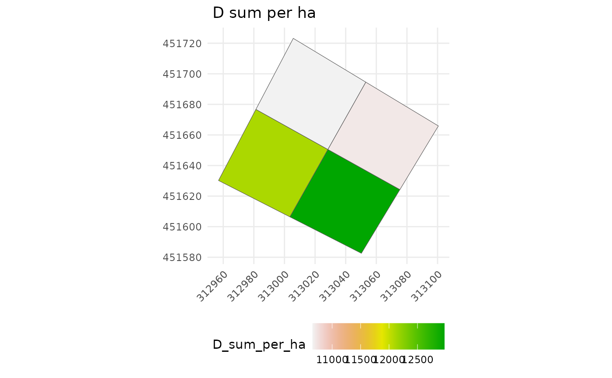

After applying the divide_plot() function, this function summarises with any defined function the desired tree metric (including AGB simulations calculated by the AGBmonteCarlo() function) by sub-plot and displays the plot representation.
Usage
subplot_summary(
subplots,
value = NULL,
AGB_simu = NULL,
draw_plot = TRUE,
per_ha = TRUE,
fun = sum,
ref_raster = NULL,
raster_fun = mean,
...
)Arguments
- subplots
output of the
divide_plot()function- value
a character indicating the column in subplots$tree_data to be summarised (or character vector to summarise several metrics at once)
- AGB_simu
a n x m matrix containing individual AGB where n is the number of tree and m is the number of monte carlo simulation. Typically, the output '$AGB_simu' of the AGBmonteCarlo() function.
- draw_plot
a logical indicating whether the plot design should be displayed
- per_ha
a logical indicating whether the metric summary should be per hectare (or, if summarising several metrics at once: a logical vector corresponding to each metric (see examples))
- fun
the function to be applied on tree metric of each subplot (or, if summarising several metrics at once: a list of functions named according to each metric (see examples))
- ref_raster
A SpatRaster object from terra package, typically a chm raster created from LiDAR data. Note that in the case of a multiple attributes raster, only the first variable "z" will be summarised.
- raster_fun
the function (or a list of functions) to be applied on raster values of each subplot.
- ...
optional arguments to fun
Value
a list containing the following elements:
tree_summary: a summary of the metric(s) per subplotpolygon: a simple feature collection of the summarised subplot's polygonplot_design: a ggplot object (or a list of ggplot objects) that can easily be modified
If 'AGB_simu' is provided, the function also return $long_AGB_simu: a data.table containing the resulting AGBD, the extracted raster values (if ref_raster is provided) and the coordinates of the center per subplot and per simulation.
Examples
# One plot with repeated measurements of each corner
data("NouraguesPlot201")
data("NouraguesTrees")
check_plot201 <- check_plot_coord(
corner_data = NouraguesPlot201,
proj_coord = c("Xutm","Yutm"), rel_coord = c("Xfield","Yfield"),
trust_GPS_corners = TRUE, draw_plot = FALSE)
subplots_201 <- suppressWarnings(
divide_plot(
corner_data = check_plot201$corner_coord,
rel_coord = c("x_rel","y_rel"), proj_coord = c("x_proj","y_proj"),
grid_size = 50,
tree_data = NouraguesTrees[NouraguesTrees$Plot == 201,],
tree_coords = c("Xfield","Yfield")))
# Sum summary (by default) of diameter
subplots_201_sum <- subplot_summary(subplots_201 , value = "D", draw_plot = FALSE)
subplots_201_sum$tree_summary
#> subplot_ID D_sum_per_ha
#> <char> <num>
#> 1: subplot_0_0 10656.19
#> 2: subplot_1_0 12103.82
#> 3: subplot_0_1 10708.82
#> 4: subplot_1_1 12972.33
# \donttest{
subplots_201_sum$plot_design

# }
# 9th quantile summary (for example) of diameter
subplots_201_quant <- subplot_summary(subplots_201 , value = "D", draw_plot = FALSE,
fun = quantile, probs=0.9)
# Dealing with multiple plots and metrics
if (FALSE) { # \dontrun{
data("NouraguesCoords")
nouragues_subplots <- suppressWarnings(
divide_plot(
corner_data = NouraguesCoords,
rel_coord = c("Xfield","Yfield"), proj_coord = c("Xutm","Yutm"),
corner_plot_ID = "Plot",
grid_size = 50,
tree_data = NouraguesTrees, tree_coords = c("Xfield","Yfield"),
tree_plot_ID = "Plot"))
nouragues_mult <- subplot_summary(nouragues_subplots ,
value = c("D","D","x_rel"),
fun = list(D=sum,D=mean,x_rel=mean),
per_ha = c(T,F,F),
draw_plot = FALSE)
nouragues_mult$tree_summary
nouragues_mult$plot_design$`201`[[1]]
nouragues_mult$plot_design$`201`[[2]]
nouragues_mult$plot_design$`201`[[3]]
} # }
# Dealing with AGB simulations, coordinates uncertainties of corners and a CHM raster
if (FALSE) { # \dontrun{
NouraguesTrees201 <- NouraguesTrees[NouraguesTrees$Plot == 201,]
nouragues_raster <- terra::rast(
system.file("extdata", "NouraguesRaster.tif",
package = "BIOMASS", mustWork = TRUE)
)
# Modelling height-diameter relationship
HDmodel <- modelHD(D = NouraguesHD$D, H = NouraguesHD$H, method = "log2")
# Retrieving wood density values
Nouragues201WD <- getWoodDensity(
genus = NouraguesTrees201$Genus,
species = NouraguesTrees201$Species)
# MCMC AGB simulations
resultMC <- AGBmonteCarlo(
D = NouraguesTrees201$D, Dpropag = "chave2004",
WD = Nouragues201WD$meanWD, errWD = Nouragues201WD$sdWD,
HDmodel = HDmodel,
n = 200
)
# Dividing plot 201 with coordinates uncertainties
nouragues_subplots <- suppressWarnings(
divide_plot(
corner_data = check_plot201$corner_coord,
rel_coord = c("x_rel","y_rel"), proj_coord = c("x_proj","y_proj"),
grid_size = 50,
tree_data = NouraguesTrees201, tree_coords = c("Xfield","Yfield"),
sd_coord = check_plot201$sd_coord, n = 200
)
)
# Summary (may take few minutes to extract all raster metrics)
res_summary <- subplot_summary(
subplots = nouragues_subplots,
AGB_simu = resultMC$AGB_simu,
ref_raster = nouragues_raster, raster_fun = mean)
res_summary$tree_summary
res_summary$plot_design[[1]]
head(res_summary$long_AGB_simu)
} # }